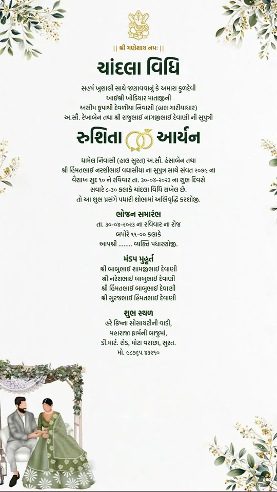
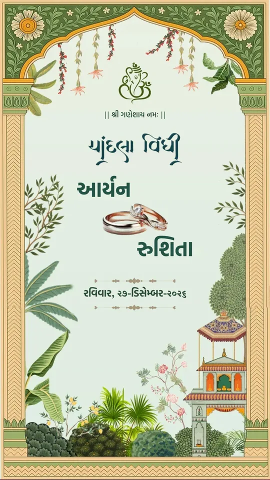
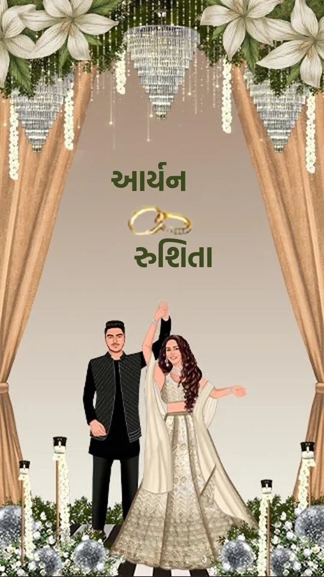

Gujarati · Hindi · Marathi · Punjabi · Tamil
Gujarati invitations and kankotri designs
A Gujarati wedding invitation is called a kankotri (કંકોત્રી), and it follows an order relatives expect: ॥ શ્રી ગણેશાય નમઃ ॥ or the family's own invocation at the top, the hosts' line, the couple written as ચિ. with their parents, the jaan arrival and hastmelap times, the માંગલિક અવસરો before the wedding, a formal letter, the નિમંત્રક and the family names, and the ટહુકો, a short verse from the children of the house. The other functions have their own Gujarati names too: Gol Dhana or chandla vidhi (ચાંદલા વિધિ) for the engagement, Pithi for the Haldi, and Simant (સીમંત) for the baby shower.
The designs below are the ones whose sample text is written in Gujarati, grouped by ceremony. The wedding cards are full kankotris of five to nine pages, the chandla vidhi cards run from one to three pages, and the sagai, Pithi and garba night cards are a single card. Any of them can be switched to English, Hindi, Marathi, Punjabi or Tamil in the editor, and any other design can be switched to Gujarati, which fills it with the Gujarati sample wording.
You do not need a Gujarati keyboard. With phonetic typing on, type names in English letters (krupa, harsh, rajeshbhai) and the editor turns each word into Gujarati script as you type. Press Esc to keep a word in English.
For the wording itself, read Gujarati kankotri wording and how a Gujarati kankotri is laid out.
Ring Ceremony

Patola Ikat Sagai
Ring Ceremony · Lord Ganesha
Bands of Patan patola, the double-ikat silk of Gujarat, at the top and bottom: black stepped diamonds on red with saffron, white and green hearts and feathered ikat edges. The Gujarati sample is headed સગાઈ સમારંભ and opens with a Ganesha line.

Neel Sagar Chandla Vidhi
Ring Ceremony · Lord Ganesha, Swaminarayan
Two painted pages of white drapes open on the sea, blue roses and gold birdcages, with the couple exchanging rings on a sofa of blue roses. The sample invokes Swaminarayan and Mahant Swami Maharaj.

Kamal Saath Chandla Vidhi
Ring Ceremony · Lord Ganesha, Ashapura Mataji
One dusty rose watercolour page with a painted Ganesha on a lotus at the top, a couple walking hand in hand and tall magenta lotuses. The same letter as Toran Kamal.

Siyaram Toran Chandla Vidhi
Ring Ceremony · Lord Ganesha, Shri Ram-Sita, Radha-Krishna, Brahmani Mataji
Three painted pages inside a carved temple arch: Ganesha on a lotus, Shri Ram and Sita and a kalash on the cover, then marigold strings and bells, with Radha and Krishna carved on the pillars inside.

Gulabi Vinti Chandla Vidhi
Ring Ceremony · Lord Ganesha, Brahmani Mataji
One cream page with pink blossoms in every corner, a maroon Ganesha emblem and a pair of engagement rings on a gold tasselled cushion. Bhojan, venue and hosts all fit on the one page.

Toran Kamal Chandla Vidhi
Ring Ceremony · Lord Ganesha, Ashapura Mataji
A cream arch between carved pillars under a toran of flowers and brass bells, with a pink Ganesha at the top and the couple in green standing among pink lotuses at the foot.

Harit Mandap Chandla Vidhi
Ring Ceremony · Lord Ganesha, Khodiyar Maa
One white page with eucalyptus sprigs, a gold Ganesha and the couple seated under a flower mandap. The only card here with a mandap muhurat section. Widened from a print card to phone shape.

Bagh Chhatri Chandla Vidhi
Ring Ceremony · Lord Ganesha, Brahmani Mataji
Two painted pages: a Mughal garden arch with a chhatri pavilion and the lettered title on the cover, then a cream panel on sage watercolour with brass lanterns and baskets of white flowers.

Jhoomar Chandla Vidhi
Ring Ceremony · Lord Ganesha, Brahmani Mataji
Two painted pages under crystal chandeliers and white lilies, with champagne drapes, fairy lights and a candlelit flower aisle. The cover shows the couple dancing below their names.
Haldi

Pithi Bandhani Mirror Work
Haldi · Lord Ganesha
Pithi is the Gujarati Haldi. Saffron bandhani panels with scalloped edges run across the top and bottom, covered in tied white dots, red chandrakhani medallions and small silver abhla mirrors. The sample under પીઠી પ્રસંગ opens with a Ganesha line.
Sangeet

Garbo Lamp Raas Night
Sangeet · Lord Ganesha
A copper garbo, the pierced clay pot with a lit diya inside, glowing on indigo and throwing its light out in rings of dots, under copper and brass bunting with mirror dots. The Gujarati sample under સંગીત સંધ્યા opens with a Ganesha line. Made for a raas garba night before the wedding.
Wedding (Vivah)

Sandhya Pink Dusk Kankotri
Wedding (Vivah) · Lord Ganesha, Shiv-Parvati, Gel Mataji, Swaminarayan
A painted six-page kankotri in pink dusk tones, with Shiv and Parvati on the cover and a baraat and a doli inside, set in Hind Vadodara like the printed original. Two inner pages carry painted lines to Gel Mataji and Swaminarayan, so check them before you choose it.

Raj Mahel Lantern Kankotri
Wedding (Vivah) · Lord Ganesha
A nine-page painted kankotri: a palace balcony with brass lanterns on the cover, then a doli, a sangeet ballroom, a mandap and a page for every function and family group, with headings cut from the original card and text in Hind Vadodara.

Mor Bagh Peacock Garden Kankotri
Wedding (Vivah) · Lord Ganesha, Radha-Krishna, Shiv-Parvati (Mahadev)
A five-page peacock garden kankotri inside a carved wooden frame, with a pink Ganesha, Radha-Krishna on a swing and a garlanded mandap. Its pages carry invocations to the kuldevi, Dwarkadhish and Bholenath, so check them before you choose it.

Van Utsav Forest Kankotri
Wedding (Vivah) · Lord Ganesha, Rajrajeshwari Butbhavani Mataji, Swaminarayan
A seven-page forest kankotri: a white pavilion with a peacock on the cover, then a golden swing between peacocks, a lotus pond, the wedding fire and a mandap canopy, with trees growing up every page and text in Hind Vadodara.

Neel Gulab Photo Kankotri
Wedding (Vivah) · Lord Ganesha, Rajrajeshwari Butbhavani Mataji, Swaminarayan
An eight-page kankotri in blue watercolour roses with two photo pages, a gold ring and a full page, that show your own couple photo once you upload it. The letter page carries a picture of Butbhavani Mataji, so check it suits your family.

Soneri Jharokha Photo Kankotri
Wedding (Vivah) · Lord Ganesha, Khodiyar Maa, Radha-Krishna, Bahuchar Maa, Swaminarayan
An eight-page kankotri that opens on your own couple photo inside a gold-edged arch, then cream watercolour pages with a small painted deity on each title: Ganesha, Khodiyar Maa, Krishna, Radha-Krishna and Bahuchar Maa.

Jain Kalpasutra Lagna Patrika
Wedding (Vivah) · Jain (Ahimsa hand)
For Gujarati Jain families: a card framed like a Kalpasutra manuscript page, with ultramarine and vermilion borders, a gold vine, gold lotus roundels across the top and two white elephants facing a lotus at the bottom. It opens with ણમો અરિહંતાણં, uses the Ahimsa hand in place of a Ganesha emblem, and has all six kankotri pages.
Baby Shower (Simant)

Gulabi Mamta Simant
Baby Shower (Simant) · Lord Ganesha, Radha-Krishna
Three painted pages on soft pink with jungle vines and lilies: baby Krishna asleep on a butter pot under માતૃત્વ and સીમંત સંસ્કાર, a mother-to-be in a lilac sari, and Radha-Krishna on the closing page.

Bal Gopal Simant
Baby Shower (Simant) · Radha-Krishna, Chamunda Maa
Five pages on sage green with hanging vines and palms. Baby Krishna on a lotus on the cover, a couple portrait, then little Radha and Krishna with cows, among flowers and on a bicycle, ending with a painted Thank You.

Kailash Wisteria Simant
Baby Shower (Simant) · Shiv-Parvati (Mahadev), Brahmani Mataji, Khodiyar Maa
Two watercolour pages under purple wisteria. Shiva and Parvati sit before the snowy peaks of Kailash on the cover, and the invitation page ends with little Shiva and Parvati on a swing.

Mor Pankh Simant
Baby Shower (Simant) · Radha-Krishna, Shrinathji, Umiya Mataji
Two cream pages with a peacock at each top corner. Baby Krishna sleeps on peacock feathers under a green painted aamantran title, and the second page closes with a mother and father holding their newborn.

Teddy Balloon Simant
Baby Shower (Simant) · Lord Ganesha, Brahmani Mataji
Two soft green watercolour pages with bunting, striped hot air balloons, a teddy bear in a basket and a cradle. No painted god, only a typed Ganesha line, so it is the most nursery-like card here.

Rangeen Mor Simant
Baby Shower (Simant) · Lord Ganesha, Ranchhodraiji (Dakor)
One page with every detail inside a gold frame on grey linen, with watercolour peacocks and flowers in the corners, two little babies beside the mother's name and eight hosts in two columns.

Hindolo Simant
Baby Shower (Simant) · Radha-Krishna, Khodiyar Maa, Mahakali Maa
Four bright pages under a blue sky: Yashoda and baby Krishna, two peacocks, Krishna on a swing with toys, and a wooden hindolo cradle hung with marigolds for the family's Jai Shri Krishna.

Haryali Mamta Simant
Baby Shower (Simant) · Lord Ganesha, Ranchhodraiji (Dakor)
One cream page framed with frangipani and tropical leaves, and a painted mother-to-be in a green and gold sari. Bhojan and venue sit in a narrow column beside her.
Looking for another ceremony or language? See every design by ceremony.